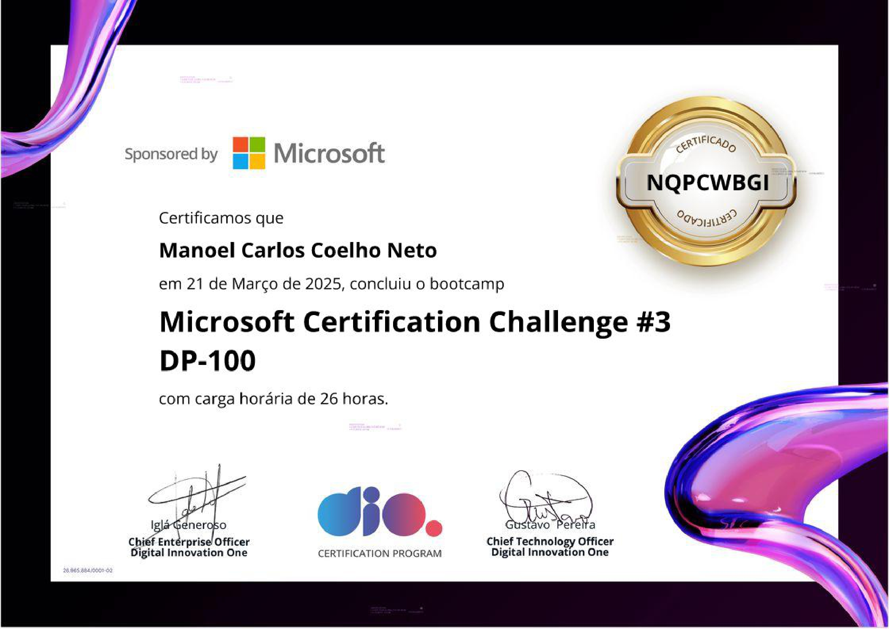
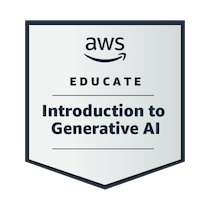

Manoel Neto
Atuar como Desenvolvedor Full Stack, QA ou Agente de IA, aplicando tecnologia e testes para criar soluções eficientes e inteligentes.
IA Agent | Software Engineering Pro | Cybersecurity Student
Rio de Janeiro, BR
manoelccoelho@gmail.com
(21) 99141-4276
Hard Skills
IA Generativa
53%
Python
45%
Git
35%
AWS
5%
Azure
5%
Soft Skills
- Pensamento Crítico
- Adaptabilidade
- Resiliência
- Comunicação Eficaz
- Aprendizagem Ativa
- Autonomia
- Iniciativa
- Gestão de projetos
- Resolução de problemas
- Liderança
- Trabalho em equipe
- Docência
Idiomas
Português - Nativo
Espanhol - Básico
Inglês - Técnico
Certificados



VER MAIS
Experiência Profissional
Suporte Help Desk | www.servcom.com.br
Mar 2024 - Set 2024
- Auxiliar na conferência, configuração e manutenção de backup em nuvem.
- Prestar suporte de nível 1 aplicado em demandas de tecnologia.
- Auxiliar na configuração e instalação do banco de dados.
Analista de Marketing Digital | Lilipe Festas
Jan 2023 - Fev 2024
Responsável por planejar, executar e analisar estratégias de marketing em ambientes digitais.
- Criação e execução de campanhas
- Gerenciamento de redes sociais
- Otimização para mecanismos de busca (SEO)
Analista de E-commerce | Porão do Alien
Jun 2017 - Dez 2023
Responsável por otimizar a loja virtual e impulsionar as vendas.
Educação
Defesa Cibernética | Uniasselvi
2º Semestre
Analista de Operações de Segurança | Microsoft Learn
Cursando
Analista de Cibersegurança Júnior | Cisco Networking Academy
Cursando
Bootcamp Potência Tech iFood – Programação do Zero | DIO
Cursando
Projetos em Destaque

Master Nerd - Toolkit Arcade Retrô para o PC Moderno
Toolkit completo de jogos arcade retrô com emulação otimizada para PCs modernos.
Ver Projeto